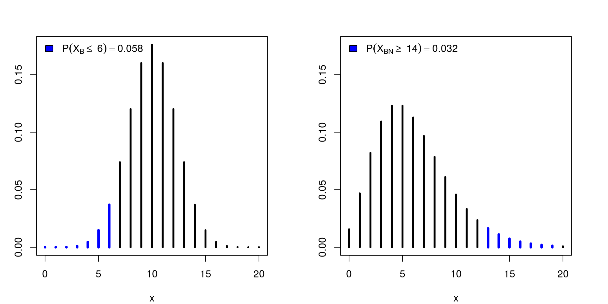

Inferência Bayesiana - Princípio da Verossimilhança
Eduardo E. R. Junior - DEST/UFPR
28 de março de 2016
O problema
(P-valor subjetivo) Para uma moeda honesta têm-se probabilidade 1/2 de obtenção de “cara” ou “coroa”. Um grupo de alunos encontrou uma moeda com um pequena deformação e decidiram avaliar estatisticamente a hipótese de que a moeda permanece honesta. Primeiramente João levou a moeda para casa e decidiu jogá-la 20 vezes obtendo 6 caras. Maria, no outro dia, ficou com a moeda para avaliar a hipótese, ela realizou lançamentos até observar 6 caras, necessitou-se de 20. No terceiro dia José foi realizar o experimento para testar a hipótese, ele decidiu realizar os lançamentos durante a noite, foram 20 lançamentos feitos até que sua mãe o chamou para jantar, ele havia obtido 6 caras. Calcule os p-valores para a hipótese em teste para cada experimento e conclua a respeito da hipótese sob um nível de significância de 0.05.
Análise frequentista
Estudando a parametrização da binomial negativa
##-------------------------------------------
dnegbin <- function(x, k, prob) {
## Parametrização onde x = número de tentativas até se obter k
## sucessos. th é a probabilidade de sucesso
(choose(x - 1, k - 1) * prob^k * (1 - prob)^(x - k)) *
! x == 0
}
## Estudando a parametrização da função nativa do R
dnegbin(20, 6, 0.5)## [1] 0.01108932dnbinom(14, 6, 0.5)## [1] 0.01108932Análise dos experimentos via testes de hipóteses
## Informações do experimento
n <- 20
y <- 6
prob <- 0.5
## p-valor para o experimento Binomial
(pv1 <- pbinom(y, size = n, prob = prob))## [1] 0.05765915## p-valor para o experimento Binomial-Negativo
(pv2 <- pnbinom(n - y - 1, size = y, prob = prob, lower = FALSE))## [1] 0.03178406##-------------------------------------------
## Parametros graficos
x <- 0:n
px1 <- dbinom(x, size = n, prob = prob)
px2 <- dnbinom(x, size = y, prob = prob)
ylim <- c(0, max(px1, px2))
par(mfrow = c(1, 2), mar = c(4, 3, 3, 3))
plot(px1 ~ x, type = "h", ylim = ylim, lwd = 3)
lines(px1[1:(y + 1)] ~ x[1:(y + 1)],
type = "h", lwd = 4, col = "blue")
legend("topleft", bty = "n", fill = "blue",
legend = substitute(
P(X[B]<=~q)==Pr,
list(q = y, Pr = round(pv1, 3))))
plot(px2 ~ x, type = "h", ylim = ylim, lwd = 3)
lines(px2[(n - y):n] ~ x[(n - y):n],
type = "h", lwd = 4, col = "blue")
legend("topleft", bty = "n", fill = "blue",
legend = substitute(
P(X[BN]>=~q)==Pr,
list(q = n - y, Pr = round(pv2, 3))))
Note que mesmo que Maria e João tenham obtido o mesmo resultado, as conclusões a partir de testes de hipóteses, a um nível de significância de 5%, são distintas. Isso se deve ao fato de que sob o paradigma frequentista leva-se em consideração o processo de amostragem e as demais possíveis amostras. No entanto esse paradigma fere o princípio da verossimilhança uma vez que obtidos os mesmos dados a informação acerca do parâmetro desconhecido (a probabilidade) deve ser a mesma!
Uma ilustração iterativa de como as coisas discordam é exibida abaixo.
##----------------------------------------------------------------------
## Interface interativa
library(rpanel)
rp.pvalor <- function() {
action <- function(input) {
with(input, {
if (n < y) {
layout(1)
plot(0, type = "n", axes = FALSE, xlab = "", ylab = "")
text(0, 0.2, "Informações incorretas\ndo experimento",
cex = 2, col = "red")
} else {
## Probabilidades associadas
x <- 0:n
px1 <- dbinom(x, size = n, prob = prob)
px2 <- dnbinom(x, size = y, prob = prob)
pv1 <- pbinom(y, size = n, prob = prob)
pv2 <- pnbinom(n - y - 1, size = y, prob = prob,
lower = FALSE)
ylim <- c(0, max(px1, px2))
## Gráficos
par(mfrow = c(1, 2), mar = c(4, 3, 4, 3))
plot(px1 ~ x, type = "h", ylim = ylim, lwd = 3,
xlab = "Número de lançamentos bem sucedidos")
lines(px1[1:(y + 1)] ~ x[1:(y + 1)],
type = "h", lwd = 4, col = "blue")
legend("topleft", bty = "n", fill = "blue",
legend = substitute(
P(X[B]<=~q)==Pr,
list(q = y, Pr = round(pv1, 3))))
plot(px2 ~ x, type = "h", ylim = ylim, lwd = 3,
xlab = "Número de lançamentos mal sucedidos")
lines(px2[(n - y):n] ~ x[(n - y):n],
type = "h", lwd = 4, col = "blue")
legend("topleft", bty = "n", fill = "blue",
legend = substitute(
P(X[BN]>=~q)==Pr,
list(q = n - y, Pr = round(pv2, 3))))
}
})
return(input)
}
## Cria a interface
panel <- rp.control(title = "P-valor subjetivo")
rp.doublebutton(panel, n, step = 1, showvalue = TRUE,
action = action, range = c(0, 80), initval = 20,
title = "Número de lançamentos")
rp.doublebutton(panel, y, step = 1, showvalue = TRUE,
action = action, range = c(0, 80), initval = 6,
title = "Número de sucessos (caras)")
rp.slider(panel, prob, from = 0.01, to = 0.99, initval = 0.5,
resolution = 0.01, action = action, showvalue = TRUE,
title = "Probabilidade de acerto testada")
invisible()
}
rp.pvalor()